Study No. 11 · Leonardo da Vinci · 1452 to 1519
The Eye
and the Hand.
Leonardo finished fewer than twenty paintings. What he left instead was a way of seeing, and a way of seeing turns out to be the whole of giving.
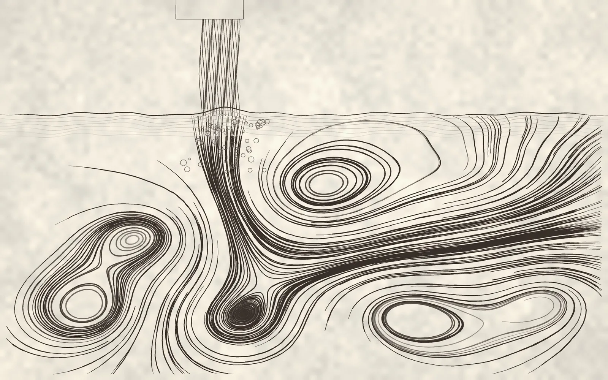
Part One
The Fall.
On a June morning in 2000, a British skydiver named Adrian Nicholas climbed into the basket of a hot air balloon in Mpumalanga, in the northeast of South Africa, and rose to ten thousand feet with a parachute that every expert who had looked at it agreed would not work. It weighed a hundred and eighty seven pounds. It was made of canvas, rope and pine, materials chosen not because they were the best available but because they were the only ones available to the man who had designed it. It was not round. It was a pyramid, four triangles of cloth meeting at a point over a square base seven meters on a side, and it had been sketched, with a few lines of explanation in a script that ran from right to left, in Milan, in or about the year 1485.
The sketch is in a notebook now called the Codex Atlanticus. The note beneath it says that if a man has a tent of sealed linen, twelve braccia across and twelve deep, he will be able to throw himself down from any great height without injury. A braccio is the length of an arm. The author had never seen a parachute. No one had. There was nothing yet to fall out of. He drew it anyway, the way he drew everything: the thing in front of him and then, in the margin, the thing that was not there yet.
Nicholas jumped. The pyramid filled, and held, and he floated down through the South African morning for most of the way to the ground, slowly enough to think, and what he thought, he said afterward, was that the ride was smoother than anything he had felt under a modern canopy. At two thousand feet he cut the pine and canvas loose so that it would not land on top of him, and finished the descent on nylon. The design had waited five hundred and fifteen years for a test. It passed on the first attempt.
I want to begin with the parachute because it is the cleanest example I know of a peculiar pattern in the life of Leonardo da Vinci, a pattern that shows up so often that it stops looking like a run of coincidences and starts looking like a method. He saw things before there was any way to prove he was right. Then he wrote them down and put them away. Then the world caught up, sometimes in a decade, sometimes in five centuries, and opened the drawer, and found the thing had already been done.
We remember Leonardo as the painter of the most famous face on earth, and he was. But the accounting is strange when you actually do it. He finished perhaps fifteen paintings in sixty seven years, fewer than twenty by any count, depending on how you treat the ones he abandoned. The largest sculpture he ever attempted, a bronze horse for the Duke of Milan, never got past the clay model, and the clay model was used for target practice by French archers in 1499. His most ambitious mural began to flake off the wall within twenty years of his finishing it, because he had chosen to experiment with the paint. He could not be made to deliver. Isabella d’Este, the most determined art patron in Italy, chased him for a portrait for the better part of a decade and got a chalk drawing. A pope once watched him grinding herbs for a varnish before he had started the painting the varnish was for, and said, more or less, that this man would never finish anything, because he thought about the end before he had begun.
What he left instead was paper. Something on the order of seven thousand pages of it survive, and the best guess is that this is a quarter of what he wrote. Notes, lists, arguments with himself, drawings of water and skulls and gears and the muscles of the lips. None of it was published. Very little of it was shown to anyone. The pages went to a pupil, then to the pupil’s son, then to a sculptor who cut them up and glued them into albums, then into the libraries of Milan and Madrid and Windsor, and one of them, the one about water and the moon, sat in a Christie’s saleroom in 1994 until a software engineer from Seattle named Bill Gates bought it for thirty point eight million dollars, which at the time made it the most expensive book ever sold.
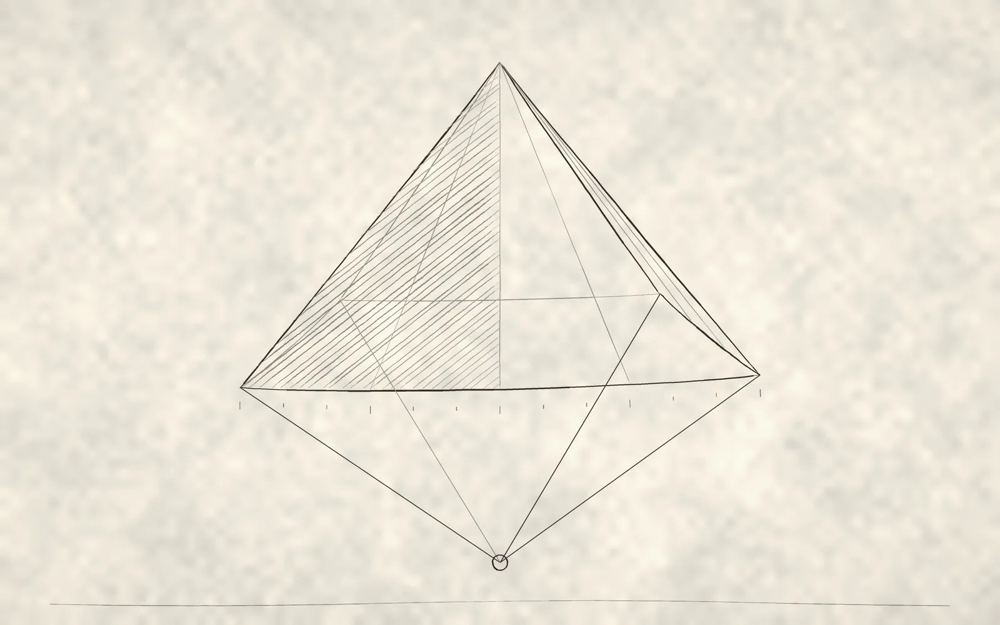
So here is the puzzle I want to work on. A man who finished almost nothing, who published nothing, who could not be relied on to deliver a painting, is the person we reach for when we want a word for the outer limit of what a human being can do. Why? And what, if anything, does a man like that have to teach the rest of us about the one subject this collection keeps circling back to, which is what it means to give?
The answer, I think, is in the notebooks, and it is in the two instruments Leonardo trusted above everything else. Not talent. Not genius, a word he never used about himself. The eye, and the hand.
Part Two
The Eye.
In 1466 or thereabouts, a boy of fourteen or so from the hill town of Vinci was placed in the Florentine workshop of Andrea del Verrocchio. He was illegitimate, which in the Florence of that era was less a scandal than a sorting mechanism: the legitimate sons of a notary became notaries, and the others became something else. He had almost no formal schooling. He would later describe himself, with the touchiness of a man who had been condescended to, as an unlettered man, and he would spend part of his forties teaching himself Latin out of a schoolboy’s grammar.
Verrocchio’s shop was not a studio in the modern sense. It was a factory of looking. It produced altarpieces and tombs and bronzes, but also pageant costumes, armor, banners and the machinery for stage effects, and the apprentices moved between all of it. The house discipline was observation. Drapery was studied by dipping linen in wet clay so that it would hold a fold, and then sitting in front of it for days. The Florentine phrase for what was being taught there was not talent. It was saper vedere. Knowing how to see.
Vasari, who wrote the first life of Leonardo thirty years after his death and was never above improving a story, tells us that when the boy painted the kneeling angel at the far left of Verrocchio’s Baptism of Christ, the master looked at it, looked at his own work beside it, and gave up painting. It is probably not true in the literal sense. It is true in the sense that matters, which is that the angel is still there in the Uffizi, and you can stand in front of it, and you can see what the fuss was about. The hair is not painted hair. It is the record of someone who had watched how light comes off a curl.
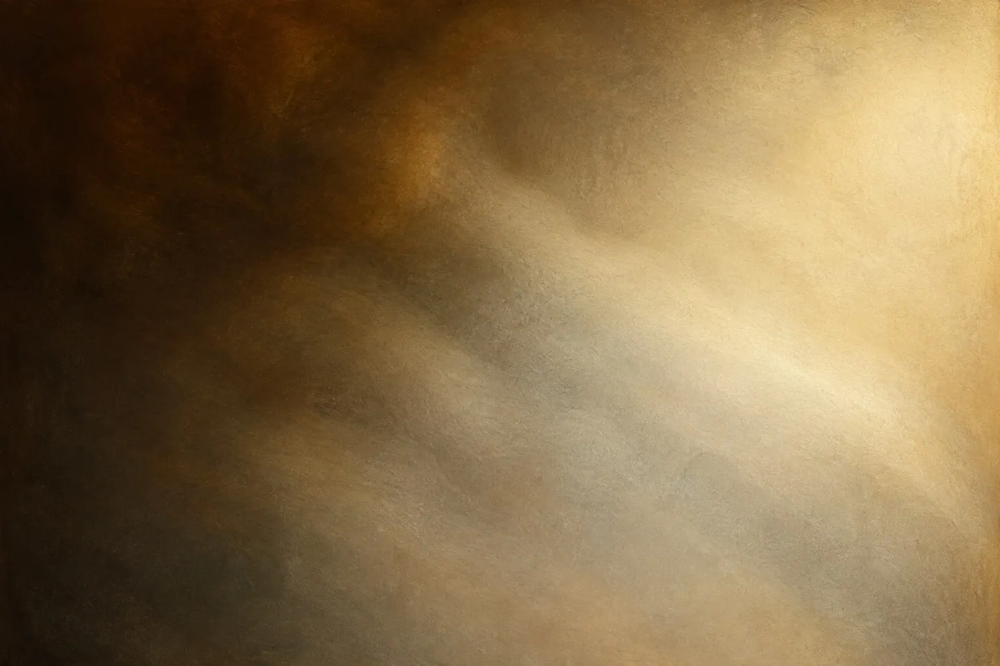
This is the thing about Leonardo that is easy to say and hard to absorb. He was not, first, a man with a gift for drawing. He was a man with an almost pathological appetite for looking, and the drawing was where the looking went. The notebooks are the proof. There is a to-do list, written around 1508, that includes the instruction to describe the tongue of the woodpecker. Not to draw it. To describe it. Nobody had asked. It was not for a painting. He wanted to know how a bird could slam its face into a tree at that speed and keep its brain, and the answer, which biologists were still working out five hundred years later, is that the tongue wraps around the back of the skull like a seat belt. Another list: ask the master of arithmetic how to square a triangle. Ask a Fleming how they walk on the ice in Flanders. Find a man who knows hydraulics and get him to explain how a lock is repaired in the Lombard manner. Get the measurement of the sun. Describe the jaw of a crocodile.
A writer named Giovanni Battista Giraldi, whose father had known Leonardo, described the way he prepared a painting. He would go to the places where people gathered, the markets and the squares and the baths, and he would watch faces, and when a face did something he wanted he would draw it in a little book he kept on his belt. Every day. The book was the instrument. The looking was the work.
We tend to think attention is what you pay when you are already interested. Leonardo ran it the other way. Attention came first. Interest was what attention produced. He wrote, on one of his sheets, that the eye is the window of the soul and the principal means by which the mind takes in the infinite works of nature, and he meant it as a technical claim rather than a poetic one. The eye was an instrument, and like any instrument it could be trained, and the training was the whole of his art.
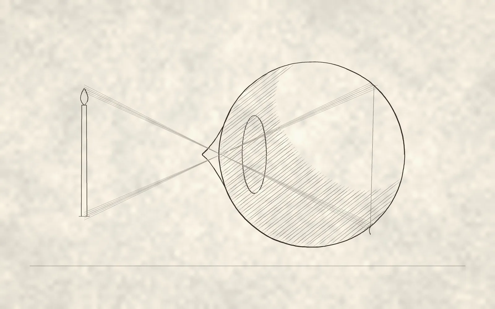
Consider what he was willing to look at. In the winter of 1507, in the hospital of Santa Maria Nuova in Florence, Leonardo sat with an old man who said he was a hundred years old and who had, the old man said, no pain and no complaint apart from weakness. They talked. The old man died in the middle of the conversation, quietly, as Leonardo put it, without any movement or sign of anything amiss. Leonardo then did what almost no one in Europe was willing to do in 1507. He opened him up, to see what a gentle death looked like from the inside. What he found were arteries thickened and narrowed until the blood could barely pass, which he described in a note that physicians now read as the first account of arteriosclerosis in the history of medicine. He also described the liver, dried and shrunken, which is the first account of cirrhosis. He would dissect some thirty bodies in his life, in hospitals and at night, in a century where the practice sat somewhere between distasteful and forbidden, and he did it because he had decided that you could not draw a hand until you had seen what a hand was made of.
That is not talent. That is looking, pushed past the point where everyone else stops.
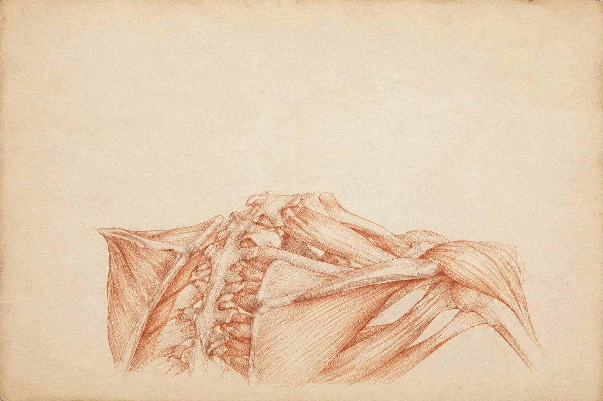
Part Three
The Hand.
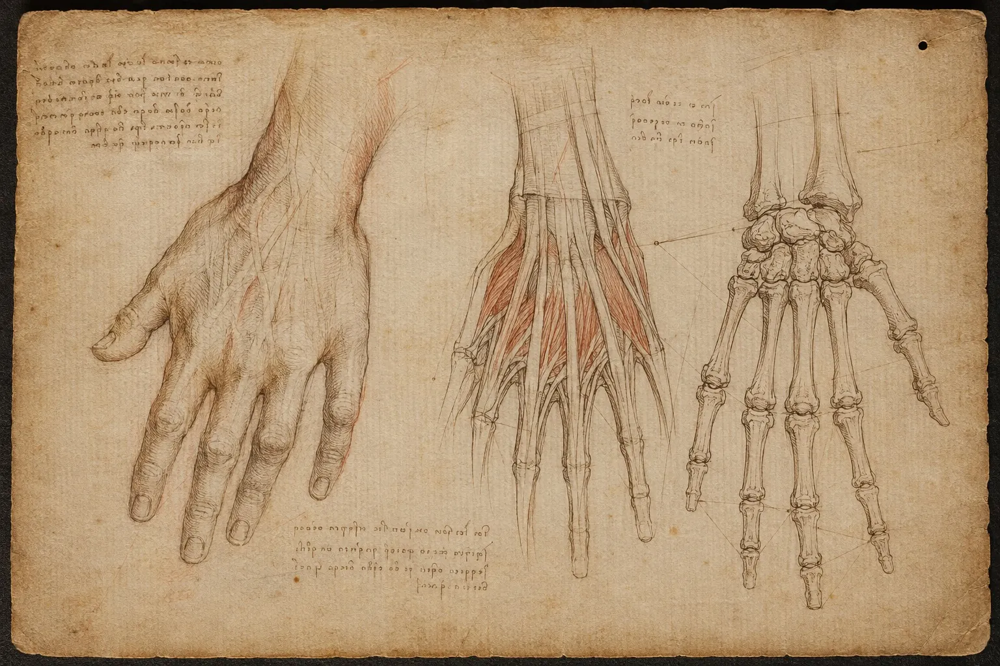
Matteo Bandello was a boy in the Dominican house of Santa Maria delle Grazie, in Milan, in the years when Leonardo was painting the Last Supper on the end wall of its refectory, and half a century later, when he had become a novelist, he set down what he had watched. Some mornings, Bandello said, Leonardo climbed the scaffold at dawn and did not come down until dark, never putting the brush aside, forgetting to eat. And on other days he would arrive, and stand in front of the picture with his arms folded, for an hour, for two, for three, and then he would take up the brush and make one stroke, and leave. Sometimes he came in the heat of midday from the other side of the city, where he was working on the clay horse, walked straight to the picture, added a single touch, and walked straight back.
The friars found this maddening. The prior complained to the Duke. Leonardo, according to Vasari, explained to the Duke that the highest minds sometimes accomplish the most when they seem to be doing the least, because they are working out in their heads what their hands will afterward do. Then he added that he had spent a year in the roughest quarter of Milan looking for a face vile enough for Judas, and that if he could not find one, he could always use the prior’s.
I want to hold that picture of Leonardo standing in front of that wall with his arms folded. Because what he was doing there is the second half of the method, and it is the half that the parachute and the woodpecker leave out. He was seeing through other people’s eyes.
The Last Supper is a painting of a single sentence. One of you will betray me. Thirteen men hear it at once, and Leonardo’s problem, the problem he stood there for hours solving, was that thirteen men do not hear a sentence the same way. Peter lunges. John collapses. Thomas raises a finger. Philip presses his hands to his chest as if to say, not me. Judas, the one face in shadow, pulls back and knocks over the salt. Andrew’s hands go up. Bartholomew, at the end of the table, has half risen from his seat. Every gesture is a different man’s interior made visible in a body. To paint it, Leonardo had to be, for the length of a stroke, each of those men. He had to know what fear does to the shoulders of a fisherman and what disbelief does to the mouth of a tax collector. He had advised painters, in his notes, to study the gestures of the deaf, who speak with the whole body because they have nothing else, and it is not hard to see why. He wanted the vocabulary of other people’s insides.
As a piece of engineering the picture was a disaster. He wanted the slowness of oil and the wall wanted the speed of fresco, and he chose the slowness, and the paint began to come away in his lifetime. What survives is a ruin. It is also, by any reasonable measure, the most reproduced picture of a group of people ever made, and I think the two facts are connected. The technique failed because he would not work at the pace of the plaster. The picture succeeded because he would not work at the pace of the plaster. He gave every man at that table the full weight of his attention, and no amount of flaking has been able to take it back out.
It is worth remembering who else was on a scaffold in those years. Michelangelo Buonarroti, twenty three years younger, could not stand him. There is a story from Florence, told by a contemporary, of a group of men outside a bank near Santa Trinita arguing over a passage of Dante. They saw Leonardo and asked him to settle it. He saw Michelangelo coming and said, courteously, that Michelangelo would explain it to them. Michelangelo took it as mockery and turned on him in the street: explain it yourself, you who designed a horse to cast in bronze and could not cast it, and gave it up in shame. Then he walked off, and Leonardo, the contemporary says, stood there and went red.
A few years later Michelangelo climbed a scaffold of his own, in Rome, and worked in true fresco at the pace of the drying plaster, a day’s patch at a time, for four years, and came down, and the ceiling was finished, and it is still there. The two men stand at opposite ends of the same problem. One let the wall set the pace, and the picture survived. The other refused, and the wall took the picture back. I do not think the second choice was the wrong one. I think it tells you where his attention was.
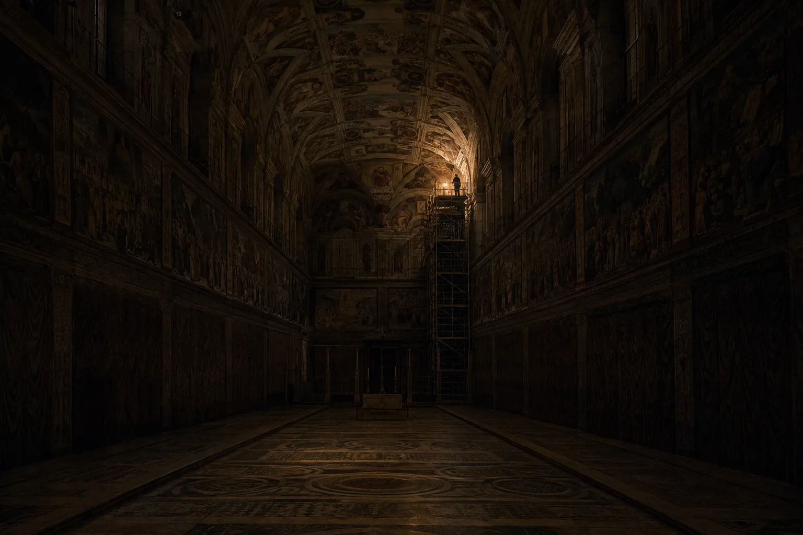
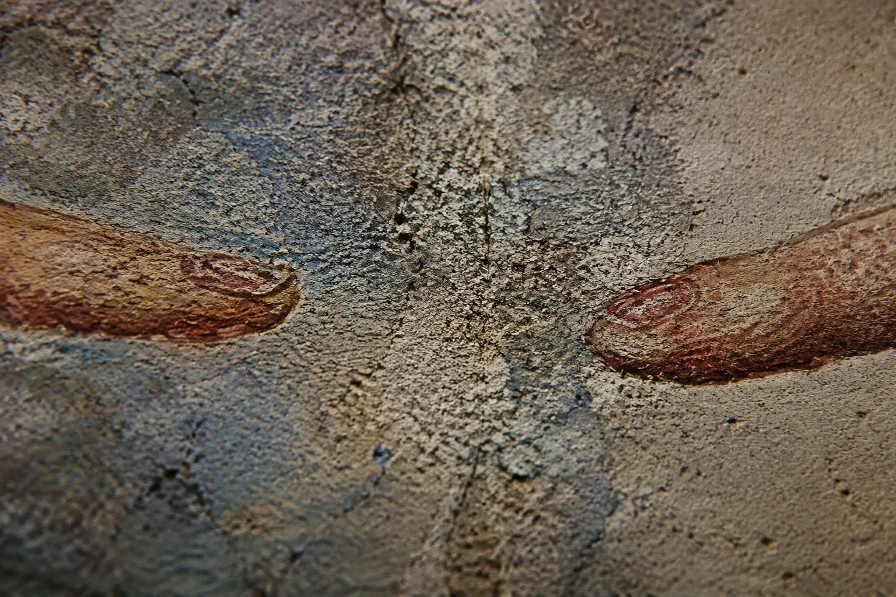
Here is a way to say what the eye and the hand actually are, as a pair. The eye is the part of you that notices what another person is going through. The hand is the part that does something about it. Leonardo’s whole life is a demonstration that the second is worthless without the first, and that the first, if you keep at it long enough, makes the second almost inevitable.
Part Four
The Number.
Sometime in the 1490s, in Milan, Leonardo befriended a Franciscan friar and mathematician named Luca Pacioli, and something happened to his notebooks. They fill up with Euclid. Proofs copied out and argued with. Attempts, hundreds of them, to square the circle. For Pacioli’s book on what the friar called the divine proportion, he drew some sixty of the most beautiful pictures of polyhedra anyone has ever made, solid and hollow, each edge a little wooden strut, each face lit as if the thing were hanging in front of a window. He wrote, at the head of one sheet, that no one who was not a mathematician should read his principles. He wrote, elsewhere, that mechanics was the paradise of the mathematical sciences, because it was there that you got to taste the fruit.
This is not the Leonardo of the postcards, and it is the Leonardo who explains the postcards.
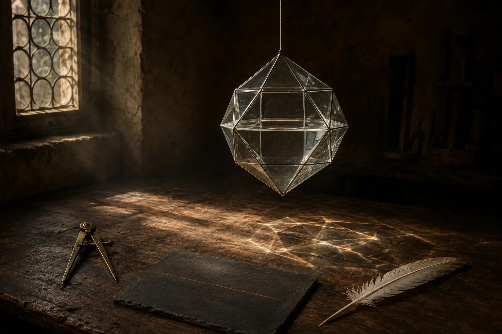
Take the drawing everyone knows, the man with his arms out inside the circle and the square. It was made around 1490 as an illustration of a passage in the Roman architect Vitruvius, who had claimed that a well made man, arms and legs extended, fits into both figures. Every other Renaissance illustrator who tried this drew the two shapes sharing a center, because Vitruvius seemed to say so, and then had to cheat the body to fit. Leonardo measured. He went and got real young men and measured them, and wrote their names next to the numbers, and what he found was that the two figures do not share a center. The navel is the center of the circle. The center of the square is lower, at the groin. So he drew it that way, two centers, and the body fits both without a single cheat, and the drawing is famous for a reason almost nobody who owns the poster could tell you. It is a correction. The great authority was wrong by a few inches and a man with a ruler noticed.
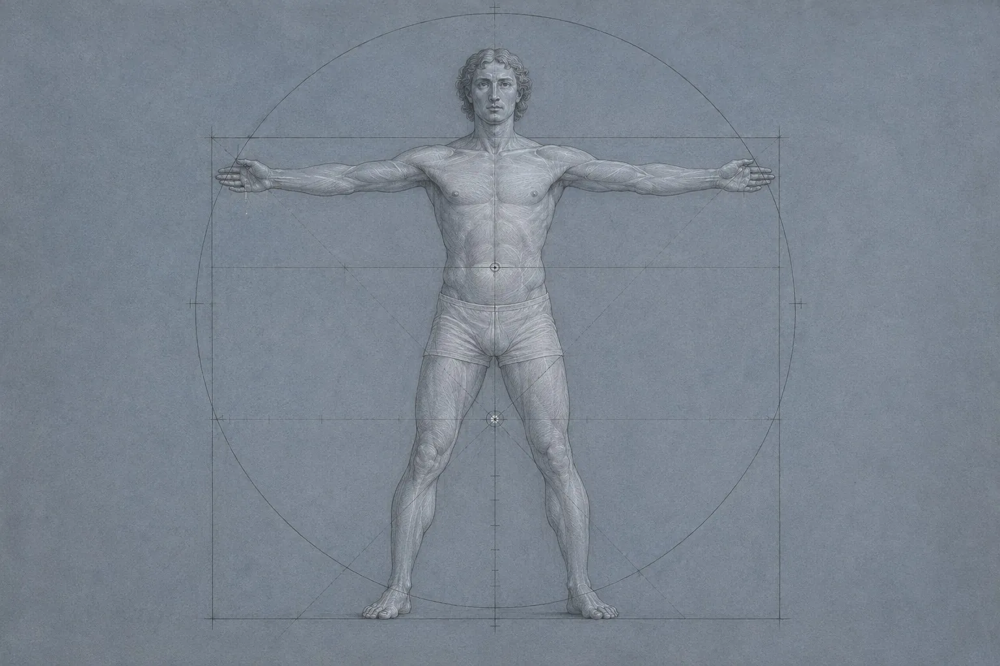
The same habit produced, in 1493, two short observations in a notebook that would have made his name in physics if anyone had read them. Friction, he found, is proportional to the load pressing two surfaces together. And it does not depend on how large those surfaces are. These are the laws of friction. They were rediscovered by a French engineer named Guillaume Amontons in 1699, two centuries later, and are taught under his name.
Why does this matter in a study about giving? Because it tells you what Leonardo thought art was for. He did not believe that painting was a matter of feeling, and he did not believe that mathematics was a matter of cold. He wrote, flatly, that painting is a mental thing. He wanted the number and the image to be one act. The proportion of a face and the proportion of a building and the path of a falling body were, to him, a single subject, and the subject was truth, and truth was what you got when you looked hard enough at anything.
That is a demanding idea and I think it is the right one. Most of us believe we have a soft side and a hard side, and that kindness lives in the soft one. Leonardo would not have understood the division. The most generous thing he could imagine doing for a man was to measure him properly.
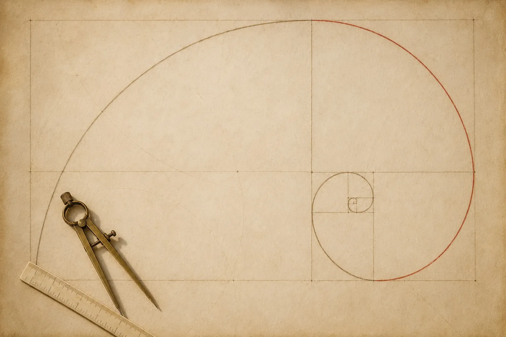
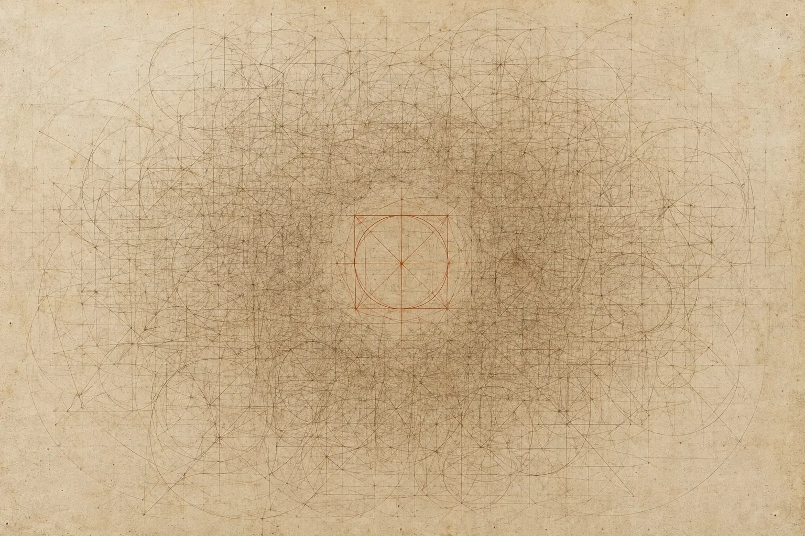
Part Five
The Flow.
He was obsessed with water. Not fond of it. Obsessed. The notebooks hold more pages on the movement of water than on any other single subject: rivers, eddies, the way a stream bends around a stone, the braided lines of a jet falling into a pool. He drew turbulence centuries before anyone had a word for it and more than three hundred years before anyone could write an equation for it, and his drawings of it are still, to a modern fluid dynamicist, uncomfortably good. He drew what a high speed camera would eventually photograph.
Then, in about 1513, he turned that eye on the heart.
He had been dissecting hearts, ox hearts mostly, and he had become fixated on a small problem. At the root of the aorta, just above the valve, the vessel swells into three little pockets before it narrows again, and Leonardo wanted to know what they were for. The accepted answer was nothing much. His answer was that they were for the water. He reasoned that as blood surged up through the open valve, some of it would curl back into those pockets and spin, and that the spinning would press the three leaves of the valve shut from behind, gently and completely, at the instant the surge stopped. To test it he proposed making a model of the aorta out of glass, filling it with water, and dropping in grass seed so that the currents would show. He drew the vortices. Little spirals, sitting in the pockets, exactly where his reasoning said they should be.
In 1968, two engineers at Oxford built the glass aorta. They had a camera where he had proposed grass seed. They found the vortices. They were where he had drawn them, and they did what he had said they did. Surgeons who design replacement valves now work around a mechanism first proposed by a man who had never seen a living heart beat, reasoning from a dead ox and a sketch of a river.
I could do this all day. He looked at the faint glow on the dark part of a crescent moon, the part no sunlight reaches, and worked out that it was the light of the sun bouncing off the earth, a century before astronomy settled the point. He looked at seashells embedded in rock on the tops of mountains and concluded, against every authority he had, that the mountains had once been the floor of a sea, and that the sea had been there a very long time. He drew a machine for grinding concave mirrors, and an odometer, and a diving suit, and a self supporting bridge that you can build this afternoon out of pencils. He wrote, in his little book on the flight of birds in 1505, that the great bird would take its first flight from the back of the hill outside Fiesole that the locals called the Swan, and would fill the world with wonder.
There is a name for what he was doing, and it is not prophecy. It is closer to the opposite. A prophet claims to see the future. Leonardo simply looked harder at the present than anyone around him, and the present, looked at hard enough, contains the future. The vortex was already in the heart in 1513. The parachute already worked in 1485. The friction law was already true. He was not ahead of his time. He was exactly in his time, with his eyes open, and everyone else was late.
He was not ahead of his time. He was exactly in his time, with his eyes open, and everyone else was late.
Call it the lag. The distance between the moment a thing is seen and the moment it is believed. Leonardo’s lag runs from a few decades to half a millennium, and the ledger of it is worth reading slowly, because it is the same ledger every act of generosity is written in.
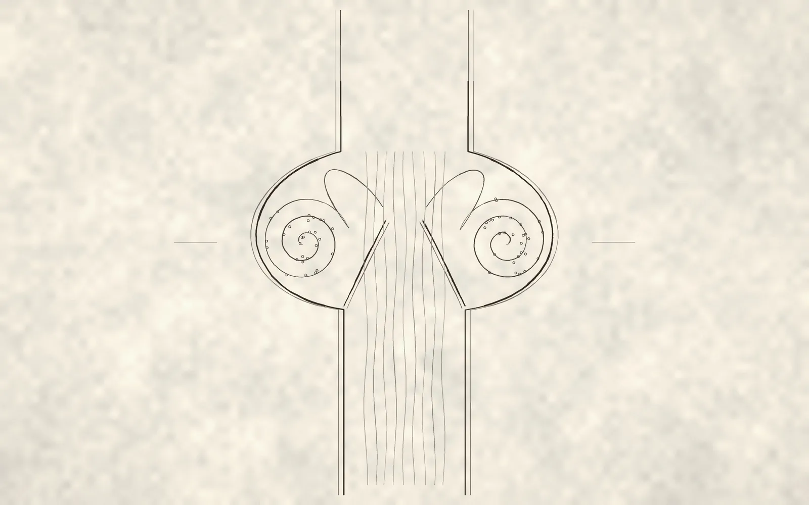
Part Six
Beyond the Workshop.
There is a sheet at Windsor, mostly geometry, on which Leonardo wrote three words in letters far larger than anything around them, as if he were shouting at himself across the page. Il sole non si muove. The sun does not move. There is no argument attached to it. No diagram, no proof, no date. Copernicus would not publish for another thirty years. Leonardo simply put it down where he could see it, the way you might pin a sentence over a desk, and went back to the geometry.
I raise it because the story I have been telling so far has a room in it, and I do not want to leave the wrong impression. Every account of a great mind has a room: the workshop, the study, the desk under the window, the place where the notebooks were filled. Leonardo had those rooms, in Florence and Milan and Rome and finally in a manor house on the Loire. But the pattern of his life is that he kept walking out of them. The eye that measured a face wanted the whole valley. The hand that drew a vortex wanted the river. He went from the page to the sky and back so often that the notebooks read, in places, like the log of a man who could not decide whether he was looking down at paper or up at weather.
So before the argument turns to giving, I want to widen the frame. Six places, each of which he actually saw, each of which changed what he thought seeing was for.
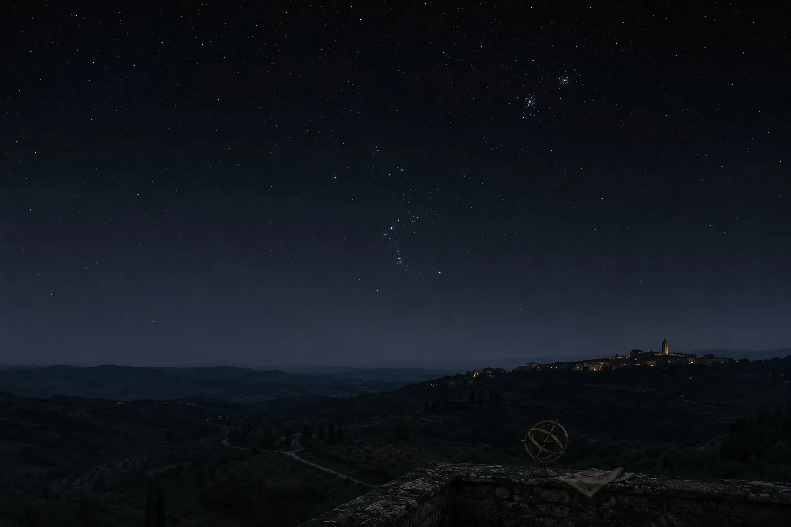
The sky · the sun does not move
The sun does not move.
He was not an astrologer. It is worth saying, because the two were one trade in his century, and because he had every commercial reason to pretend otherwise. Court astrologers in Milan were paid. Leonardo, in a note that reads like a man closing a door with his foot, set astrology aside as a business that lived off fools and said he would not waste words on it. What he wanted from the sky was not a message. He wanted to know how it worked.
He looked at the stars through a pinhole pricked with a needle and held to the eye, and noticed that they lost their rays and became points, and concluded that the rays were in the eye and not in the star. He reasoned that the stars looked small because they were far, not because they were small. He drew the face of the moon and wrote himself a note to make lenses that would show it large, a century before anyone did. He argued, in the Codex Leicester, that the earth would shine to a person standing on the moon exactly as the moon shines to us, which is to say that he had stood on the moon in his head and looked back. And he wrote that the earth was not at the center of the sun’s circle, nor at the center of anything.
None of it was published. All of it was true. The constellations open this section because they set the ceiling on how far he thought looking was allowed to reach.
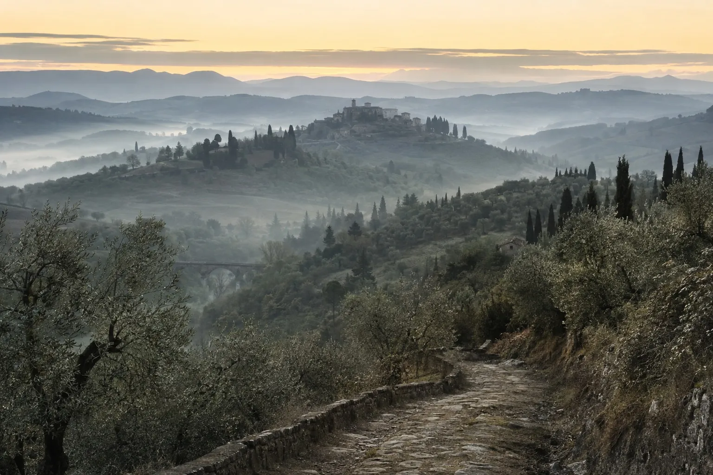
Vinci · 15 April 1452
Raised on a view.
The town is small, and the hill it sits on looks out over the valley of the Arno toward Florence, and if you stand there in the morning you understand something about him that no biography quite manages to say. He was raised on a view.
His grandfather Antonio recorded the birth at the back of a notary’s ledger: a grandson, son of his son Piero, on the fifteenth of April 1452, at the third hour of the night. The mother was a local girl named Caterina. The boy grew up in the grandfather’s house among olives and vines, and had, by the standards of a notary’s family, nothing much he was required to do, which is the condition under which looking becomes a habit. Somewhere in the notebooks there is a memory that may belong to these hills. He wandered among dark rocks and came to the mouth of a cave, and stood there bent over, and felt two things at once, fear of the dark inside and desire to see whether there was anything marvelous in it. He does not say which won. He does not need to.
There is a drawing in the Uffizi dated in his own hand, the fifth of August 1473, the feast day of Santa Maria della Neve. He was twenty one. It shows the valley from above: a river, a spur of rock, farms, the haze of distance drawn as a thinning of the line. There are no saints in it and no story. It is generally taken to be the first drawing in Western art of nothing but a landscape, made for no client, on a summer afternoon, by a young man who had climbed up to see what the place he came from looked like from above. It is the first ascent. Everything else in this section is the same drawing, made larger.
The Arno · 1473 · 1503
You do not defeat water. You read it.
The river is the line that runs through his whole life. It is in the 1473 drawing. It is in the Florentine hills. It is in the maps he made for the Republic thirty years later, when Machiavelli, of all people, was his contact at the chancery, and the two of them were part of a plan to move it.
The plan was a piece of war. Florence was besieging Pisa, and Pisa lived on the Arno, and someone proposed cutting a channel that would take the river away from the city and leave it dry. Leonardo surveyed the valley, drew the river from above as a braided rope of blue wash, calculated the volumes of earth, and specified the labor. In the autumn of 1504 two thousand men dug for weeks. The channel was cut too shallow, the walls collapsed, the river went where it liked, and the project was abandoned in a flood of expense and recrimination.
He kept drawing the river anyway. There is a sheet at Windsor on which the Arno’s whole course from Florence to the sea is laid out with the tributaries fanning off it, and the strange thing about the sheet is how it reads. It is a map. It is also a diagram of water in motion, the same eddies as the vortex studies. And it is, unmistakably, handwriting. He drew the river the way he wrote, in a running left handed line, and beside it he planned a canal that would carry Florence’s goods to the sea by way of Prato and Pistoia, cutting through the hills at Serravalle. The canal was never dug. The railway and the highway to the coast run close to the line he drew. The river he could not move became the thing he could not stop redesigning, and the lesson he took from it is the one every engineer eventually takes from water. You do not defeat it. You read it.
The Alps · Monboso · about 1511
Standing on the earth’s body.
He climbed. This is not a metaphor. In the Codex Leicester he describes standing on a mountain he called Monboso, high in the Alps north of Milan, probably on the shoulder of Monte Rosa, and looking up, and noticing that the sky above him was darker than the sky he had left in the plain. He noticed that the sun burned harder up there and that the air was thinner and that the hail lay in the hollows in July. From these he reasoned that the blue of the sky was not a color of the sky at all but the color of sunlit moisture in the air, seen against the black of what lay beyond it, and that if you climbed high enough the blue would thin and the black would show through. He was right. It would take the physics of the nineteenth century to say why.
He used the same eye on the way down. Distant mountains, he told painters, must be painted bluer and fainter than near ones, because there is more air between you and them, and air is a substance and not a nothing. He gave the technique a name, aerial perspective, and it is why the background of the Mona Lisa dissolves the way it does. And he looked at the rocks under his boots and saw shells in them, marine shells, high above any sea, and rather than accept that a flood had carried them there in forty days, he counted the layers and worked out that they had been laid down over a span of time so long there was no word for it yet. The earth, he wrote, had a kind of life, with rivers for veins. He was standing on its body and reading it.
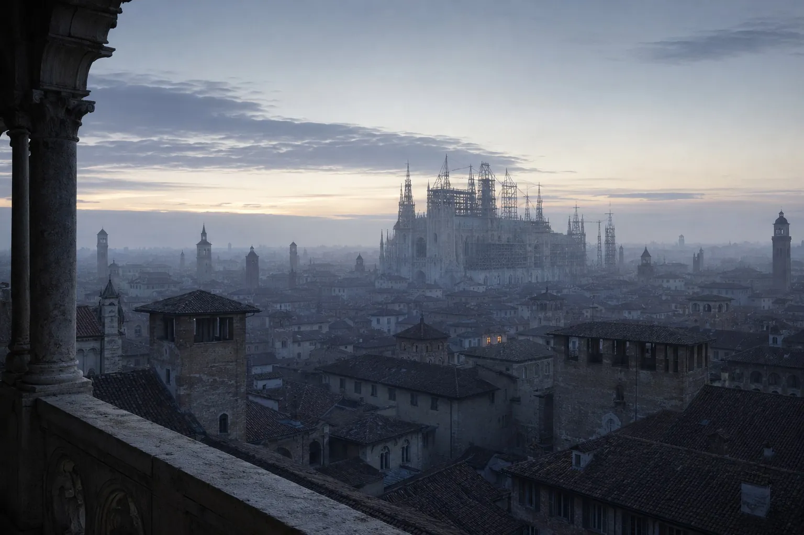
Milan · 1482 to 1499
A city on two levels.
Milan was where the workshop became a city. He arrived at about thirty with the job letter about siege engines, and stayed seventeen years, and somewhere in the middle of them the plague came. It arrived in 1484 and stayed two years and killed, by the estimates of the time, something like a third of the people in the city. Leonardo watched what a crowded, wet, low city did to the people in it, and then he did what he did with everything else. He redesigned it.
The plan is in one of the Paris manuscripts. A city on two levels: an upper level of wide, airy streets and loggias for people on foot, and a lower level for carts, goods, animals and waste, joined by ramps, with canals running beneath to carry the traffic and flush the drains. Streets as wide as the buildings were tall, so the sun could reach the ground. And ten new towns, each of five thousand houses and thirty thousand people, to take the pressure off Milan itself, because a city, he reasoned, was like a body, and a body crowded past what its organs could serve got sick. He was describing modern urban planning about four hundred years early. No one built any of it. The cathedral, meanwhile, stood in scaffolding for every year he lived there, and when the works committee asked for designs for the tower over the crossing, he sent them a letter comparing the building to a sick body and the architect to a doctor, and a wooden model, and then, before they could choose, withdrew it.
The canals he did get to touch. Milan lived on them, and he worked on the locks, and the gate in the Codex Atlanticus, two doors meeting at an angle so that the water’s own weight holds them shut, is the miter gate, which is the gate on nearly every canal lock in the world today. A few years after he left, at Imola in 1502, he drew a whole town from directly above, pacing the streets with a compass and turning them into a plan, the first true map of a city in the modern sense. It is the same move as the 1473 drawing. Climb high enough and the thing you are inside becomes a thing you can see.
Amboise · 1516 to 1519
Distance was the last thing he studied.
He crossed the Alps at sixty four, with Melzi and Salaì and three paintings wrapped for the journey, one of which was the Mona Lisa. The King of France had offered him a manor house called Cloux, a few hundred yards from the royal château at Amboise, a pension, a title, first painter and engineer and architect to the King, and, as far as anyone can tell, no obligations at all. Francis, who was twenty two, appears to have wanted him the way you might want a library.
A visitor in the autumn of 1517, a cardinal’s secretary named Antonio de Beatis, found an old man whose right hand had gone useless, most likely from a stroke. He could no longer paint, de Beatis reported, but he could still draw, because the hand that drew had always been the left one, and he was still teaching. What he was drawing was the end of the world. The Deluge sheets at Windsor, a dozen of them, show mountains coming apart in water, the same spirals as the heart valve and the plunging jet, turned up to a scale that dissolves cities. And in the same months he was designing a city. Romorantin, a new palace and town for the king, with canals to carry the river through it and a scheme to join the Loire to the Saône so that boats could cross France. He was drawing the flood and the town at the same desk.
He wrote his will on the twenty third of April 1519, leaving the notebooks to Melzi, and died on the second of May. Vasari says the King held his head as he died, which is almost certainly not true, and is the kind of thing people say about a man they cannot bear to have died alone. He was buried in a church at Amboise that was later pulled down. What is left of him there is a slab in the floor of a small chapel, and the boxes of paper, and the fact that he lay seven hundred kilometers and a mountain range from the hill he was born on. Distance was the last thing he studied.
The point of the six plates is not travel. It is that ascent was his method. From the page to the valley, from the valley to the mountain, from the mountain to the city and from the city to the stars, the direction was always up and out, and every step up bought him a way of seeing something below him whole. Hold that, because it is the shape of what comes next. The last ascent he made was not into the sky. It was into other people.
Part Seven
Through Other Eyes.
So now the question I promised. What does any of this have to do with giving?
Let me come at it sideways, through an experiment.
A few winters ago, two behavioral scientists, Amit Kumar and Nicholas Epley, sent people out onto a public skating rink in Chicago on a cold day with cups of hot chocolate. The task was simple. Give the cup to a stranger. Before they did, the givers were asked to predict how the stranger would feel about it, on a scale, and afterward the strangers were asked how they actually felt. The givers guessed low. Not a little low. Systematically, reliably low. They imagined they were handing over a warm drink. The recipients experienced something else, something with a person in it, and rated the moment far more warmly than the givers had dared to predict. Kumar and Epley ran versions of this again and again, with cupcakes and notes and small favors, and the result held every time. People who do a kindness underestimate what it does to the person receiving it.
Now think about why. The giver sees the cup. The recipient sees the giver. The giver is looking at the thing being given, its size, its adequacy, its cost, and asking whether it is enough. The recipient is looking at the fact that a stranger noticed them. These are two different pictures of the same event, and the gap between them is precisely the gap Leonardo spent his life on the scaffold trying to close. He stood in front of the wall for three hours because he refused to paint Peter from Leonardo’s side of the table. He wanted to paint Peter from Peter’s.
This is what I think giving actually is, underneath the money and the volunteering and the language of charity. Giving is seeing the world through somebody else’s eyes, and then doing the thing your hand would do if it were their hand. That is the whole of it. The gift is the hand. The seeing is the gift.
The gift is the hand. The seeing is the gift.
Leonardo, for what it is worth, understood this in the smallest way as well as the largest. Vasari tells us that when he passed the stalls where birds were sold, he would stop, pay the seller whatever was asked, lift the birds out of their cages with his own hands, and let them go. A Florentine traveler writing home from India in 1515 described a people there who ate nothing that had blood in it, and explained them to his reader by saying they were like our Leonardo. He built, at the end of his life, a mechanical lion for the King of France that walked across a hall and opened its chest to spill out lilies. These are not the acts of a man with a soft side. They are the acts of a man who could not stop seeing what a bird in a cage was going through, because he had spent his life learning to see what everything was going through, and once you have that eye you cannot turn it off.
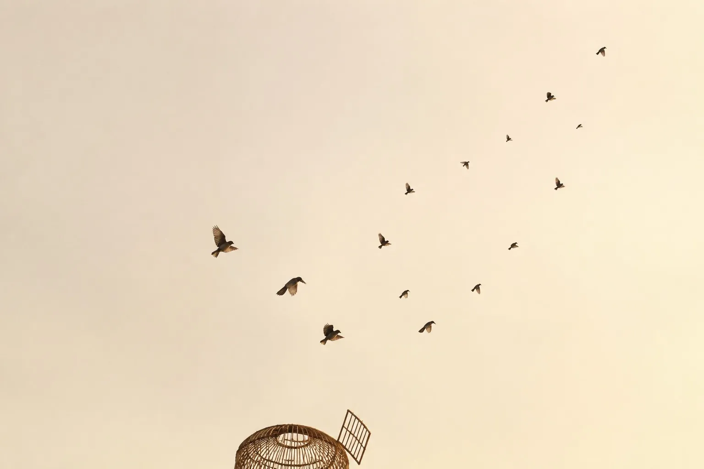
Simone Weil, four hundred years later, wrote a sentence that could serve as the caption for every page of his notebooks. “Attention is the rarest and purest form of generosity.” She meant that to attend to another person fully, without an agenda, is itself a gift, and possibly the only gift that is not mixed with something else. Leonardo would have agreed, and added a second half. Attention is the rarest form of generosity. And generosity is the only proof that you were paying attention.
Part Eight
The Chain.
Here is a fact about the notebooks that I find almost unbearable. Leonardo’s anatomical drawings, the hundreds of sheets of muscle and nerve and the child in the womb, were made between about 1489 and 1513. They were not published. Vesalius, whose 1543 atlas is taken as the birth of modern anatomy, never saw them. Nobody saw them. If they had appeared as a printed book in 1515, which Leonardo intended and never managed, the study of the human body would have leapt forward by decades. Instead the pages went to his pupil Melzi, who loved them and kept them and showed them to almost no one, and when Melzi died his son put them in the attic, and from the attic they were sold and cut up and scattered, and a quarter survived, and it was three hundred years before scholars began to read what was on them.
The lesson is not that Leonardo should have published. The lesson is about what a gift is worth while it is still in the drawer.
A seen thing that stays in the drawer is not yet a gift. It becomes one at the moment it lands in another pair of hands. And this is where a man who finished almost nothing turns out to be the perfect teacher, because the evidence of the last fifty years, in the science of how kindness moves through a population, says that it is not the finished masterpiece that changes the world. It is the small act, repeated, and passed on.
In 2010 two researchers, James Fowler and Nicholas Christakis, published a study of strangers playing a series of games in which each person could put money into a shared pot, at a cost to themselves, for the benefit of everyone. The players were shuffled after every round, so no one ever played with the same person twice. What they found was that generosity was contagious. Not vaguely. Measurably. When one person gave, the people in that group gave more in the next round, to entirely new people, and those people gave more in the round after that, to people who had never met the original giver. The effect reached three degrees out before it faded. One act. Three generations of strangers.
This is Leonardo’s pattern in a laboratory. The vortex drawn in 1513 helps close a valve in a living chest today. The pyramid sketched in 1485 opened over Mpumalanga in 2000. The seeing traveled. It took a while, and it took other people’s hands, but it traveled. What Fowler and Christakis add is a time scale. You do not have to wait five hundred years. A kindness done today has, by their measurement, already reached someone you will never meet.
And so the future does look different one small act at a time, but not in the way the phrase usually means. It is not that small acts add up like coins in a jar. It is that each one is a sketch, made by someone with their eyes open, of a world that does not exist yet, and every sketch is a set of instructions that somebody else can follow.
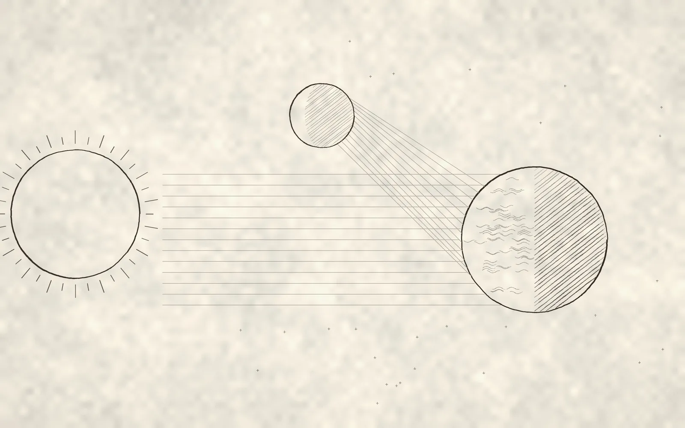
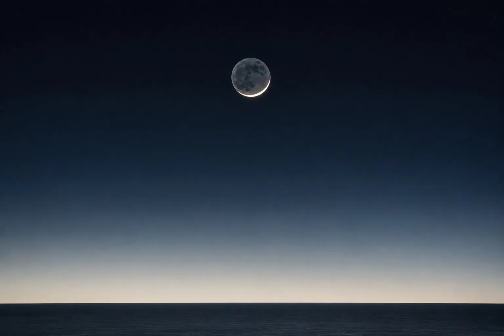
Part Nine
The Art of It.
There is an old argument about whether Leonardo was primarily an artist or primarily a scientist, and it has always seemed to me to be the wrong argument, because he plainly thought the distinction was silly. Around 1482 he wrote to the Duke of Milan applying for a job. The letter runs to ten numbered paragraphs about bridges and cannon and siege engines and ways of draining a moat, and only at the very end, almost as an afterthought, does he mention that he can also paint, and that in painting he can do as well as anyone. He was not being modest. He simply did not see a painting as a different kind of object from a bridge. Both were the eye and the hand. Both were a way of seeing something the world needed and then making it exist.
This is the last thing I want to take from him, and it is the thing this collection is named for.
Your giving can be art. I do not mean that as a slogan. I mean it in the sense Leonardo would have meant it. Art, for him, was the discipline of looking at a thing until you saw what was true about it, and then moving your hand in accordance with what you saw. It was not decoration and it was not self expression. It was fidelity. A good deed done that way, with the eye first, is the same act as a good drawing. You see what a specific person, in a specific moment, actually needs, not what you would need in their place, not what is convenient to give, and you do that. It will usually be smaller than you expected. It will almost always land harder than you expected. That is the hot chocolate. That is the bird.
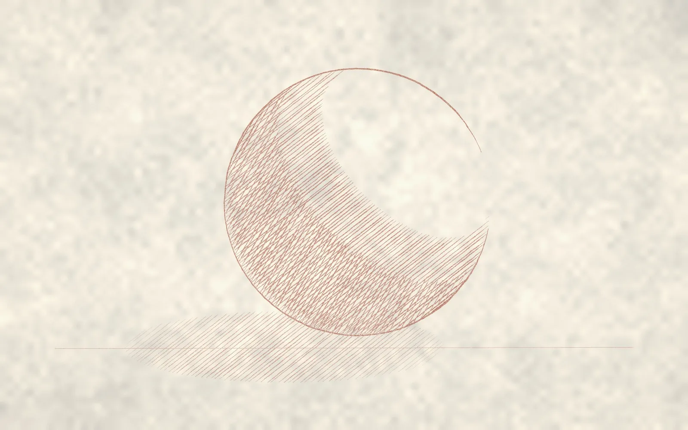
And your art can change the world. Again, not as a slogan. Leonardo’s clay horse was shot to pieces, his Last Supper flaked, his notebooks were lost, and the world was changed anyway, by the seeing, which turned out to be the part that could not be destroyed. Nobody needed the bronze. They needed the way of looking that produced it, and that traveled in sketches, from hand to hand, until it landed somewhere it could be built. A deed is a sketch. It says: here is how a person could be treated. Someone sees it and, three degrees out, treats someone that way. That is the entire mechanism. It is the only mechanism there has ever been.
Adrian Nicholas, floating down over South Africa under a hundred and eighty seven pounds of pine and canvas, was not the first person to trust Leonardo’s eye. He was the first to let it hold him up. The drawing had been right for five centuries. It only needed a hand.
On one of the sheets in the notebooks, in the mirror script, is the phrase he used for the whole of what a painter needed. Saper vedere. Knowing how to see. He never wrote down the second half of the instruction, because for him it did not need writing. Know how to see, and let the hand do what the eye has already decided. That is the whole of the art of doing good. It was the whole of his.
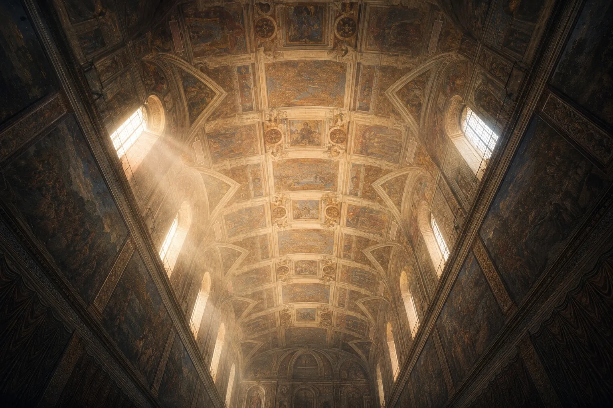